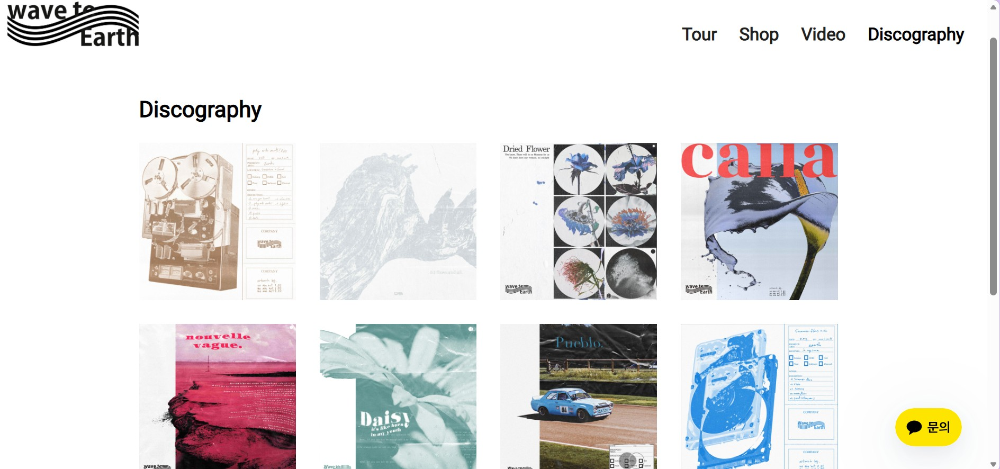

Week 1 🎝 Basics of Music Data
Task 1
🎝Identify a theme for your dataset.
My chosen theme for my data set is the band wave to earth from Seoul, South Korea. They are a 3 piece band consisting of guitarist and lead singer Daniel Kim, drummer Dong Kyu Shin and bassist John Cha. They also have 2 session members, keyboardist Jo Jung-guen and saxophonist Jeon-min. They manage all writing, composing, recording, mixing and mastering themselves, creating a unique indie pop sound with lo-fi and jazz elements. I chose wave to earth as they are one of my favourite and most listened to artists, who I have been lucky enough to see perform live twice - Listen to them here !!
Task 2
🎝 Based on your own experience, what do you think are some challenges to working with music and music-related data (perhaps related to access, curation, distribution, etc.)?
🎝How does your selected theme display some of these challenges?
🎝 Describe the current manifestations of data relating to your selected theme, discussing how it is presently curated (collected and gathered) and how it is presented, described, and analysed.
Some challenges I faced when working with music related data this week were accessing scores as many required you to buy the score or subscribe to access it. Furthermore, my chosen theme did not have any official scores so I have had to rely on unofficial scores that may contain mistakes, I am also concerned there could be issues with copyright.
 Wave to earths official website presents their discography from their most recent album 'play with earth! 0.03' to their oldest single 'wave' by displaying the album artwork that acts as a link to the releases Spotify page. They give credit to Seungki Hong who creates all of their artwork as well as being their main photographer. Once you click on an artwork and are redirected to the Spotify page you can then find more descriptive data such as the releases name, tracks included, time of pieces, when it was released and the acoustic data. ADD LINK
 Furthermore, their website contains a video section displaying their visualisers for each song from their most recent album 'play with earth! 0.03' as well as song live performances from their 'play with earth Europe' tour. More music videos and live performances can be found on their YouTube channel and social media accounts, all of which are linked on their official website.
Furthermore, their website contains a video section displaying their visualisers for each song from their most recent album 'play with earth! 0.03' as well as song live performances from their 'play with earth Europe' tour. More music videos and live performances can be found on their YouTube channel and social media accounts, all of which are linked on their official website.
I failed to find any official notated data however their where many of unofficial and fan made scores. One place I found scores was MuseScore. Unfortunately this means there isn't scores available for every song and if there is, it may contain errors.